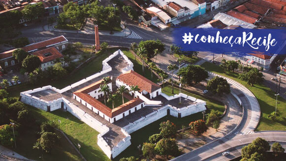

Abriga acervo de documentos iconográficos de extrema importância para a preservação da história urbana, cultural e social do Recife. São cerca de 250 mil imagens, mais de três mil títulos, entre livros e revistas, um acervo cartográfico com pouco mais de 1800 peças digitalizadas, incluindo mapas, plantas e projetos de arquitetura, 146 azulejos, três portas e duas imagens de santos pertencentes à Igreja dos Martírios, que foi demolida para a abertura da Avenida Dantas Barreto. O Museu da Cidade do Recife é um espaço para visitação, pesquisa e realização de eventos e atividades culturais. Faz parte da Secretaria de Cultura da Prefeitura do Recife.
Forte das Cinco Pontas s/n – CEP 50020-500, Bairro de São José, Recife/PE
 Voltar